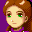
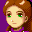

 Eh, a lifetime's supply of cookies will do.
And they forgot to change 'Urumuchi' (Ulmuch) to 'Hsu', like they did in GS, in TLA!
Order, order, everybody! The point of this page is to explain why Garet's last name isn't Jerra, so lets roll!
 Is this the part where I'm meant to pledge undying devotion to you?
Is this the part where I'm meant to pledge undying devotion to you?

Eh, a lifetime's supply of cookies will do.
 Well, this is great news. I don't have to worry about marrying Garet... can you
imagine? Jenna Jerra? Ugh!
Well, this is great news. I don't have to worry about marrying Garet... can you
imagine? Jenna Jerra? Ugh!
 You don't need to marry him anyway...
You don't need to marry him anyway...
 STFU.
STFU.
 Jenna, there are young, impressionable-
Jenna, there are young, impressionable-
 If they are young and impressionable, they don't know what STFU means. Shut up.
If they are young and impressionable, they don't know what STFU means. Shut up.
 Who on earth has the name 'Jerra' anyway? Were the translators on crack?
Who on earth has the name 'Jerra' anyway? Were the translators on crack?
 Well, they messed my name up, didn't they?
Well, they messed my name up, didn't they?
And they forgot to change 'Urumuchi' (Ulmuch) to 'Hsu', like they did in GS, in
TLA!
Order, order, everybody! The point of this page is to explain why Garet's last
name isn't Jerra, so lets roll!
 |
Incriminating picture #1!
This is Garet's name, using the debug room in Ougon no Taiyou: Hirakareshi Fuuin... er, the Japanese version of Golden Sun, and did you know, the original Japanese version had a title, like The Lost Age? Hirakareshi Fuuin translates to The Broken Seal. Ok, now we have Katakana characters here. Je-ra-ru-do. So what does Jerarudo translate to? Gerald. That's Garet's Japanese name of course.
|
 |
It's Garet's mother. Notice that the first two kana characters are 'Jera'. Where have we seen them before? Oh, that's right, in the kana for Gerald! The other characters say 'Mama', so we have Jera-mama... I guess that to say Jerarudo-mama... it was either too much, so it wouldn't fit, or they were lazy. Pick which ever one you like best. So they basically shortened it to Jera-mama... and of course, Jera is part of the katakana for Gerald... so what do you think it translates to? Gerald's mother...
|
 |
Incriminating picture #3.
Same thing, this time around it says Jera-papa. Gerald's father, simply enough. I'm not going to go off on another long winded explanation, you know. I've done enough waffling! Next!
|
 |
Incriminating picture #4!
Again, we have 'jera' plus 'otouto' which means 'little brother'. So 'Jera-otouto' basically says it's the younger brother of Garet.
|
 |
Incriminating picture #5!
This time it says 'Jera-ane'. 'Ane' means 'older sister', so that would be Garet's older sister.
|
So there you go, that's Garet and his family... no names for any of them or anything.
So, that makes us question, where did the translators pull out a name like 'Jerra' from?
They didn't realise that 'Jera' stood for 'Jerarudo' and translated it directly to 'Jerra' and left it in there, in the debug room... They changed Jera-mama and Jera-papa to Mrs Jerra and Mr Jerra, and they gave his sister and brother names and made them Kay Jerra and Aaron Jerra... silly translators. They should have just translated the parents directly as Garet's mother, Garet's father... None of this "Jerra" nonsense. But I'm ok with them giving Kay and Aaron their names.
 Yay! Caz rules!
Yay! Caz rules!
 Wow... amazing...
Wow... amazing...
I'm gonna have to learn some Japanese so that I can study the Japanese GS
closely... exposing translators sure is fun.
 You think you'll get away with it, but any second now the
You think you'll get away with it, but any second now the Empire
Translators will come banging on your door and you'll have to send this out with
a droid in an escape pod or something.
No way, I don't want to be Princess Leia! Make Jenna be!
 Are you kidding? She kissed her brother! I'd rather kiss a frog than Felix!
Are you kidding? She kissed her brother! I'd rather kiss a frog than Felix!
 Could have been worse, she could have-
Could have been worse, she could have-
 Shut up! I'm not being Luke either! He's whiny!
Shut up! I'm not being Luke either! He's whiny!
STFU! This is not Star Wars, the Translators are not an evil empire headed by
Felix's dad with a toaster on his head, Jenna and Felix are not twins either,
nobody in the games are twins, and... damn, it would be funny though. The
Princess Jenna rushes to get the Translator's deepest, darkest secrets to the
Rebel Alliance while pursued by the Translators, and they land in the hands of
Felix... heh heh... and Anakin was way whinier!
 Are you done
yet?
Are you done
yet?
 So NOW we know why I was supposedly the ONLY one with a last name. I don't have
one. Nobody does. It makes perfect sense now.
So NOW we know why I was supposedly the ONLY one with a last name. I don't have
one. Nobody does. It makes perfect sense now.
So am I kinda nameless...
 Well, the translators gave you a name...
Well, the translators gave you a name...
 If someone's a die-hard, loyal to the original version purist, then yeah, you're
kinda nameless from their point of view.
If someone's a die-hard, loyal to the original version purist, then yeah, you're
kinda nameless from their point of view.
 Right, and it's like calling me Picard, instead of Piers. Which I don't get...
Right, and it's like calling me Picard, instead of Piers. Which I don't get...
 You guys done trying to be funny? Great, because I think the reader might like
to go and ponder the latest revelations/plot the death of translators/have
supper/discover what kind of crack translators smoke/insert random pasttime
here...
You guys done trying to be funny? Great, because I think the reader might like
to go and ponder the latest revelations/plot the death of translators/have
supper/discover what kind of crack translators smoke/insert random pasttime
here...